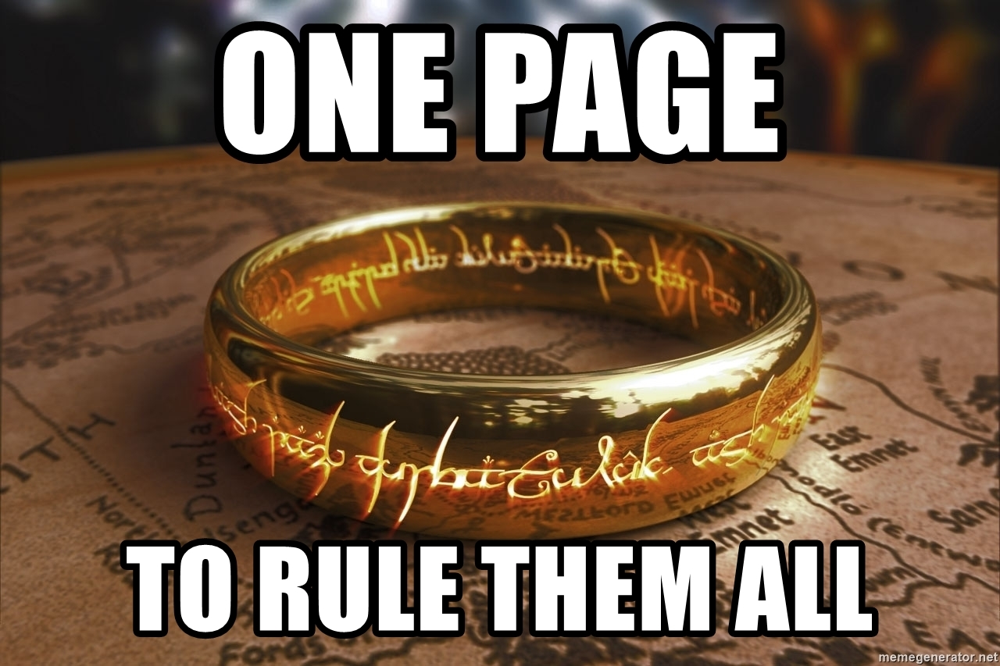
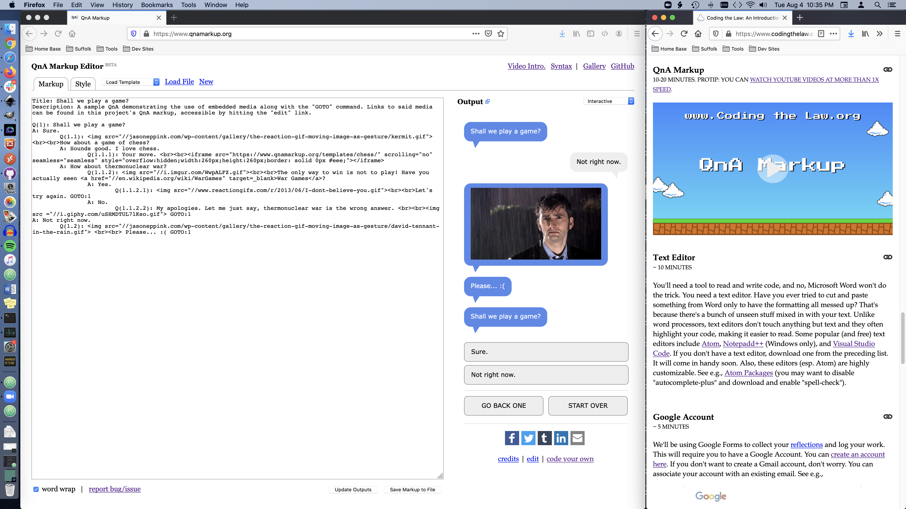

“What I cannot create, I do not understand.” Richard Feynman
Learn how to think about technologies in the law by building your own. In this project-based course, open to non-programmers and coders alike, we explore the technical, legal, and ethical dimensions behind the use of computer algorithms by legal practitioners and the justice system. Projects range from the creation of simple document review and automation tools to the construction of expert systems and narrow AIs.
Students' final projects will address real-world needs. You won't just learn how to do things, you'll actually do them. Design your own project, or join the Lab's Document Assembly Line Project—focusing on promoting digital access to the courts. For help calibrating your expectations, read this statement.
Not a Suffolk Law student? You're welcome to work through the materials here, join the Lab's Teams, and even help out with the Document Assembly Line, but I'm afraid you won't be able to attend our synchronous meet ups/classes. No one will grade your work, and the only credit you'll receive is the knowledge of a job well done. That being said, you're free to work through what's here at your own pace. ;)
Optional Media.
If you want to learn more about some of the topics discussed in the video above, and you have some free time, you might enjoy the following.
- How to Fix A Drug Scandal, a Netflix series examining the Dookhan Drug Lab Scandal. I haven't had a chance to watch this, but my impression from those who have seen it are that it does a reasonably good job with a single exception—not focusing as much as they could have on the role of the public defender's in the litigation. CPCS (the MA defenders org) and the ACLU worked together on these cases throughout, but I'm told CPCS attorneys weren't given much screen time. :/
- The Information: A History, A Theory, A Flood by James Gleick, includes a good discussion of the work of both Babbage and Lovelace as it relates to the Analytical Engine.
- Arcadia, a play by Tom Stoppard about time, uncertainty, and chaos bases its protagonist, Thomasina Coverly, on Ada Lovelace. Lovelace's father, Lord Byron, actually helps to drive part of the plot. If you liked Shakespeare in Love or Rosencrantz & Guildenstern Are Dead you should check it out.
- And perhaps my favorite fictionalization of Lovelace and Babbage: The Thrilling Adventures of Lovelace and Babbage.
How this Works

You can't have an online class in the 2020's without some memes.
If you are taking the class for credit, you must complete each level before its weekly meet up. Feel free to work ahead. Enrolled students also need to complete a final project, described here.
Everything you need for a single level will be presented on a single page. One page to rule them all. Each level, aside from this one (since it's the first) should take about six hours and forty minutes to complete. Levels will generally include a mix of readings, videos, and independent projects.
If you have cookies enabled, your answers to questions on level pages, like this one, are saved locally for this browser. They are NOT graded or shared with me. They are presented as an aid to help you in the moment. Your weekly reflections, however, are saved and shared with me. Additionally, you'll be asked to log a rough estimate of the time you spent working on each level to help me calibrate the time estimates you find here.†
You can ignore it, but I've added a stopwatch to the bottom right of each level page to help you track your time, not visible on mobile devices. It starts when you hit play and pauses when you close or reload the page, hit pause, or edit the time, which you can do by clicking on the time and typing. Like the answers to questions on this page, this information is stored locally in this browser and not shared with me.
🚨 When working on a project, if you are spinning your wheels for more than 30 min, ask for help! The best place to do this is via Teams (described below). You can ask me for help privately or put a call out to the whole-class channel. The latter is strongly encouraged. Chances are if you're having an issue, someone else has already dealt with it or others are likely to face it in the future. Either way, asking your question in the public helps everyone. Your success is dependent on asking for help. Heck, if you knew everything already you wouldn't need the class. When in doubt, ask for help! It's literally my job to help you. 🚨
A note on front loading: our project-based exercises will be front loaded so folks can get exposure to things early on. The hope is that this will help build a foundation upon which you can build your final project. These assignments will diminish in number as time goes on such that during the last three levels/weeks you will only be expected to do a few readings and work on your final project.
Course Texts
We'll start reading from these texts in Level 2. If you haven't already, you can purchase or rent a copy from the bookstore.
Knowledge Base
Everyone comes to this adventure with a different background. So this section is designed to be a menu of sorts. If you already know a topic well, you can skip the relevant material. Just answer the questions below, and section(s) will disappear accordingly. That being said, if a section doesn't disappear, you should do it. Any time you save skipping a topic, however, should be spent working on your final project or reading ahead in either Weapons of Math Destruction or How Not to Be Wrong. FYI, we will be reading all of Weapons of Math Destruction and all but parts III and V of How Not to Be Wrong.
This week I'm asking you to set up a few accounts and take some tools for a spin. This will allow us to hit the ground running at our weekly meet up. You will be publishing some of your work to the Web. So some of your usernames, like your GitHub username, will be publicly associated with your work. Choose them accordingly. Also, let me know if you plan on using a pseudonym for public-facing work so I know who is who.
All of that being said, here are a few questions to see if we can pare things down.
Are you proficient with QnA Markup?
You've gained roughly 30 minutes by dropping a video introduction to QnA Markup. FWIW, you're going to be asked to create an interview in QnA Markup at the end of this Level. If you find yourself with questions, change this answer to unhide the QnA introduction.
Do you have a good text editor? I'm not asking about a word processor, there's a difference.
You've gained roughly 10 minutes by dropping a section on installing a text editor.
Do you have a GitHub account, and do you know how to use it?
You've gained roughly 20 minutes by dropping a GitHub exercise that walks you through creating a reop and making a pull request et al.
Two Windows / Two Screens?

A screen shot of this site next to a window where you are being asked to code.
This site was designed to be placed in a window off to the side of your screen so you could work while watching videos and referencing texts. This should be especially helpful when working on coding projects. If you're screen is too small for this, I suggest opening this page on your phone and placing it next to your computer screen. This won't help when you're asked to cut and paste text (or will it?) but at least you can watch and work along with videos. You may also want to open Teams (our chat tool described below) in a tab in the window with this page, so it too can sit off to the side while you work. Remember, if you're spinning your wheels, you should use Teams to ask for help.
Secure Your Passwords
You'll find yourself creating a bunch of accounts as you work your way through these lessons. So here's some free advice. You should take security seriously. What's a good password? One that's hard for someone to "guess"/discover. We all know a long pass phrase or random collection of numbers and letters is good form, but it's all for not if you use the same password for multiple accounts and one of them gets hacked. Likewise, if there's a post-it on your laptop with your login, it doesn't really help if someone steals your laptop. Best practices: (1) store your passwords in an encrypted password manager; (2) don't reuse passwords; (3) actually use random passwords; and (4) set up a login/lock for your computer(s) and phone(s).
Want a free and simple option? We suggest bitwarden. In general, you may want to choose a manager that allows for local storage of passwords on a single device (like your phone). This usually means that you don't have to pay for a subscription. It also means your passwords stay on a single device, not the cloud. However, this makes phone backups even more important, and sometimes you have to sign up for a free subscription and cancel it before the trial runs out to access the free local functionality. Always read the fine print! Anywho, you should be backing up all of your devices! Ask me sometime about my 1L laptop failure in the middle of my Contracts exam.
Also suggested: (1) if you can, turn on two-factor authentication; and (2) conisder encrypting your hard drive.
And please, esp. if you encrypt your hard drive, make sure you will never forget the password you use to get into your password manager. If you do, it's like losing everything.
Teams
~ 5 Minutes
Teams, a business-friendly chat program, is our primary communication hub. Consequently, you should join our team (only works for Suffolk emails). Once you have, DM me @Colarusso to say "hi," and I'll add you to our class channel. Enrolled students are expected to regularly check Teams or to set up push notifications. If you wish, you can download the app for your phone or desktop.
I’ll be available intermittently over Teams throughout the week and at odd times of night. Don’t worry about bothering me. If I’m unavailable, I won’t answer. That being said, this is another good reason to ask questions in the class channel. There are just more folks there. Note: when communicating over Teams, a screenshot is your friend, esp. when dealing with an error message. See below.
How to take a screenshot
Because it's good to know and easy to forget, here are instructions for taking a screen shot: Mac Instructions; PC Instructions.
Here is a link to the QnA Markup editor. If you'd like to save/download QnA source or HTML content directly from the editor, I suggest using the Chrome browser as these features aren't supported by all browsers. You can of course save this content by cutting and pasting text into a text editor. Also, keep in mind that a space and a tab are not the same. For QnA to recognize something as indented, you must use tabs.
Take 20 min to review the Syntax page and work through a few of the examples found in the Quick Start Guide.
A Good Text Editor
~ 10 Minutes
You'll need a tool to read and write code, and no, Microsoft Word won't do the trick. You need a text editor. Have you ever tried to cut and paste something from Word only to have the formatting all messed up? That's because there's a bunch of unseen stuff mixed in with your text. Unlike word processors, text editors don't touch anything but text and they often highlight your code, making it easier to read. Some popular (and free) text editors include Visual Studio Code and Notepadd++ (Windows only). If you don't have a text editor, download and install one from the preceding list. It will come in handy soon.
Google Account
~ 5 Minutes
We'll be using Google Forms to collect your reflections and log your work. This will require you to have a Google Account. You can create an account here. If you don't want to create a Gmail account, don't worry. You can associate your account with an existing email. See e.g.,
GitHub
~ 5 Minutes
Git is a system for managing the many versions of code one writes over the course of a coding project. At one level, it acts like track changes for computer code, allowing multiple people to collaborate on a single project. GitHub is a website on which you can host and manage projects using Git. It's also a community of users where people share their code. If you haven't already, you can create a GitHub account here (choose the free plan).
GitHub Pages
~ 10 Minutes
In this exercise, we're going to publish a website using GitHub Pages. GitHub Pages is a free service offered by GitHub. What does it do? In short, it serves your code from a webserver, placing it on the Web.
GitHub Pages places the code from your repo (or some subset of that code) on a webserver for others to access over the Internet. Yes, people can already see your code if they visit your repo's page on GitHub.com, but their browsers don't interpret that code. That is, they see the text of the code, not the "final product." By serving your code on a webserver you can actually place your code live on the Web. GitHub Pages restricts what it will serve to something called static content (things like HTML), but that's all we need for our purposes.
Make sure you're signed into GitHub.com and create a new repo called "ctl" with the following description, "A collection of work for my Coding the Law class," and be sure to select "Initialize this repository with a README."
After creating the repo, click on Settings.
Click on the Pages section in the left-most menu, then select main branch from the Source pulldown. Then click Save.
This will update your settings page, showing where on the web your page is being served (e.g., https://colarusso.github.io/ctl/).
If you visit your page, you'll see the content of your README.md file served as a webpage. That's because the the README is the only file on your site.
Customarily, webpages aren't Markdown files (.md). They're normally HTML files. We'll get in to HTML (.html) more in another exercise, but like markdown, they're just text files filled with content conforming to a set structure. For those of you who attended class, you don't need to do this, but if you want to play around with creating your own webpage, use your text editor to create a new "text" file named hello-world.html. It should have the following content.
You can cut and paste the code from here:
<html>
<head>
<title>Hello world!</title>
</head>
<body>
Hello world!
</body>
</html>
After you've saved your file, drag and drop it into your repository (or click Add file and upload it), then commit your change like so.
Wait a minute or two (it can take a few minutes for your GitHub Pages site to update) then in your browser visit https://[your username].github.io/ctl/hello-world.html. If everything worked, you should see something like this.
Congratulations. You've published a webpage! 🎉
Self-Reflection and Logging Your Work
~20 min
At the end of every level before the statement of your closing challenge (Your Mission), we ask that you take a few minutes to reflect on how things are going. For most levels I'll also include a set of reading questions to queue things up for our synchronous discussion. Your answers will be shared with me and it will let me know that I can look for any project work you may have posted to GitHub. That being said, you've almost completed Level 1. Tell me how it's going by completing the form linked below.
Note: Any work you do below, to the extent that it is logged, will be logged in level 2.
Here's the DACA memo, our flowchart, and the debugging sheet mentioned above. You only need to read pages 1 and 2 of Debugging, up until Using an online debugger.
To be clear, we will devote 20 to 30 minutes of our meet up to working on this challenge. You will work in groups while I circulate. To be clear, you shouldn't start work on this challenge until we meet, aside from watching the video and reading the two pages noted above. Obviously, if you're not an enrolled student, you'll have to do this work independently. See the meet up section for more context.
Synchronous Meet Up, AKA our Class Time
August 28, 2023 @ 4pm Eastern

By the time we're done with our meeting, you will be a coder!
If you're an enrolled student, we'll be meeting in Sargent Hall Room 305 on Monday August 28th at 4pm. If you're not an enrolled student, I'm afraid you can't join us.
We will use this time to: (1) get to know each other a little; (2) troubleshoot any issues folks might have had working through the knowledge base; (3) complete your mission (please bring your laptop); and (4) discuss the readings.
We will add the following to your mission's QnA. Note the use of the Title, Author, and Before tags.
Title: DACA "Flowchart"
Author: [your name]
Before: <link rel="stylesheet" type="text/css" href="https://suffolklitlab.org/howto/qna/style/style.css">
<div id="icon" style="background-size: 110px 99px;background-image: url('https://suffolklitlab.org/howto/qna/images/maxheadroom.gif');"></div>
<h2 style="text-align:center;">DACA "Flowchart"</h2>
<p><b>This is a <a href="https://www.codingthelaw.org/#mission">class project</a>. You should not rely on it as a source of legal information!</b></p>
<p>Answer the following questions to see if someone qualifies for DACA.</p>
When we are done, you will publish your mission QnA's source code and HTML output to:
https://[your username].github.io/ctl/daca.txt and
https://[your username].github.io/ctl/daca.html respectively.
† Time estimates are just that—estimates. The assumptions used to calculate reading time are as follows: 48 pages is assumed to take roughly an hour to read. When working with non paginated texts, it is assumed that a page is roughly equal to 250 words. Videos assume both 3X and 1X viewing. Estimates for coding are based on past experience. Each level, except for this first one, should include about 6 hours and 40 min of work.